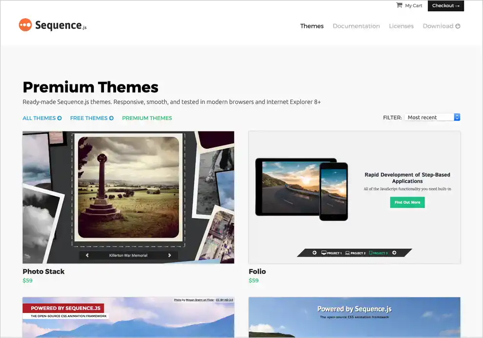

<!DOCTYPE html>
<html lang="en">

<head>
    <meta charset="UTF-8">
    <meta http-equiv="X-UA-Compatible" content="IE=edge">
    <meta name="viewport" content="width=device-width, initial-scale=1.0">
    <title>Portfolio</title>
    <link rel="stylesheet" href="../portfolio html/css/style.css">
</head>

<body>

</body>

</html>
<section class="portfolio" id="portfolio">
    <h2>Portfolio</h2>
    <div class="portfolio-items">
        <div class="portfolio-item">
            
            <h3>PET PLATE</h3>
            <p>I was the designer and front-end developer for the initial Pet Plate website in 2015 and worked closely with the company as it grew over a period of 5 years, eventually becoming Lead Front-end Developer. By early 2020, Pet Plate had successfully
                raised a total investment fund of $13 million dollars..</p>
            <P2>Pet Plate launched in August 2015, delivering on-demand freshly cooked meals for pets. I was involved with Pet Plate during its conception, providing design and responsive front-end templates that I integrated into a Ruby on Rails framework.
                I eventually became the Lead Front-end Developer, coordinating with the back-end development and design teams to produce a strong user experience. My main areas of focus were in producing the conversion flow in React, the My Account pages
                in jQuery (and later moving to React), and the marketing pages in WordPress,</P2>
            <a href="#">View More</a>
        </div>
        <div class="portfolio-item">
            
            <h3>LSU Football Ops</h3>
            <p>Building a visually striking website with large images and animated elements whilst remaining fast to use across a wide range of devices Red Six Media approached me to develop an interactive and smooth front-end experience for the LSU - Football
                Operations Facility Expansion. The project required solutions to produce a website that matched the detailed designs and interactivity concepts provided by Red Six Media whilst remaining fast to use across a wide range of devices.
            </p>
            <p>To save on overall cost and reduce development time, I built the website on AngularJS and Sass Bootstrap. These gave out of the box features such as dynamic page transitions and responsive layouts which I customized to respect the designs.
                The design contained a lot of imagery which could have quickly added up to a large file size and slower experience but to work around this we optimized images, used 8 bit PNGs where possible and rotated textures to make them appear unique
                despite being re-used multiple times.

            </p>
            <a href="#">View More</a>

        </div>
        <div class="portfolio-item">
            
            <h3>Sequence.js</h3>
            <p>Creating an animation framework that is fast, powerful, and easy to use Sequence.js is the most ambitious side-project I've made, combining all of my web experience to produce designs for the website and ready-made themes, JavaScript development
                for the smooth and cross-browser animation framework, along with utilising my knowledge of promoting a product on the web and gaining it high levels of exposure.</p>
            <p>Sequence.js is a responsive animation framework for creating step-based applications such as sliders, presentations, and banners. In 2012 I released the first iteration of the Sequence.js framework and website, and in 2015 released version
                2, re-built from the ground-up.</p>
            <a href="#">View More</a>


        </div>
    </div>
</section>